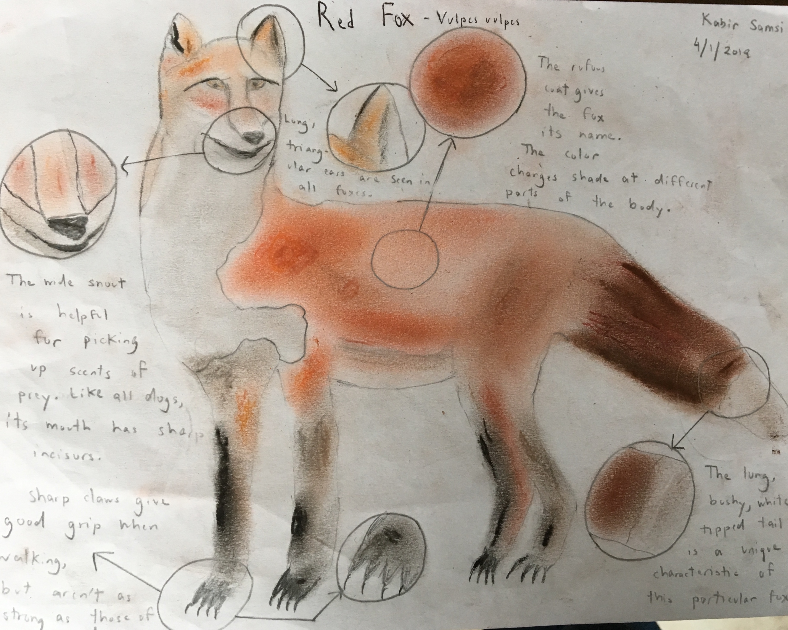

Red Fox

Mediums: Chalk Pastel, Color Pencils, Printer/Sketchbook Paper
This was my first scientific sketch. I sketched a Red Fox, using chalk pastel to get the basic shading and color pencils for extra details. Through the drawing, I added zoom bubbles around the notable body parts, such as the claws, tail and ears. I also wrote notes about specific body parts. I felt that the final result looked more like a wolf than a fox, but I was still pleased with the proportions on the body.